Evaluation at a glance
The failure-class conformal reference and Gaussian affinity floor are calibrated only on the scene-disjoint ScanNet partition. ETH3D and BEVGSReg are empirical cross-dataset evaluations; no cross-domain finite-sample guarantee is claimed. Objaverse is retained as a transparent object-centric limitation.
| Data | Decision | Coverage | Precision | FAR | Recall |
|---|---|---|---|---|---|
| ScanNet | Geometry only | 10.24% | 64.29% | 4.05% | 67.50% |
| ScanNet | Full VERIFYGS | 8.54% | 74.29% | 2.43% | 65.00% |
| ETH3D | Geometry only | 29.19% | 90.74% | 4.07% | 79.03% |
| ETH3D | Full VERIFYGS | 26.49% | 93.88% | 2.44% | 74.19% |
| BEVGSReg | Geometry only | 28.70% | 82.81% | 10.89% | 43.44% |
| BEVGSReg | Full VERIFYGS | 26.91% | 86.67% | 7.92% | 42.62% |
Paired failure discrimination
| Score | ScanNet AUROC | ScanNet AP | ETH3D AUROC | ETH3D AP |
|---|---|---|---|---|
| Pipeline consensus | .829 | .530 | .803 | .704 |
| Negative trimmed Chamfer | .913 | .621 | .899 | .790 |
| Bidirectional support | .952 | .805 | .973 | .884 |
| VERIFYGS | .949 | .744 | .973 | .939 |
Full-dataset candidate outcomes
Cells report strict/relaxed registration successes over every evaluated map pair for which the corresponding public method produced an output.
| Pipeline or selector | ScanNet | ETH3D | BEVGSReg |
|---|---|---|---|
| BUFFER-X | 7/15 | 9/15 | 13/26 |
| CAST | -- | 1/2 | 12/23 |
| CoFiNet | 2/4 | 11/15 | 26/29 |
| FCGF | 1/5 | 1/6 | -- |
| FPFH+RANSAC | 0/1 | 0/0 | 5/6 |
| GeoTransformer | 3/8 | 3/9 | 18/25 |
| ICP | -- | 2/2 | 10/15 |
| PARE-Net | 3/5 | 3/5 | 15/17 |
| PREDATOR | 0/0 | 0/0 | -- |
| RandPCR | 0/0 | 0/0 | -- |
| RefreshReg (reproduced) | 1/1 | 2/4 | -- |
| SplatReg | 0/1 | 3/8 | 7/19 |
| VERIFYGS selection | 8/15 | 13/16 | 24/29 |
| Oracle upper bound | 8/18 | 14/18 | 27/33 |
Quantitative analyses
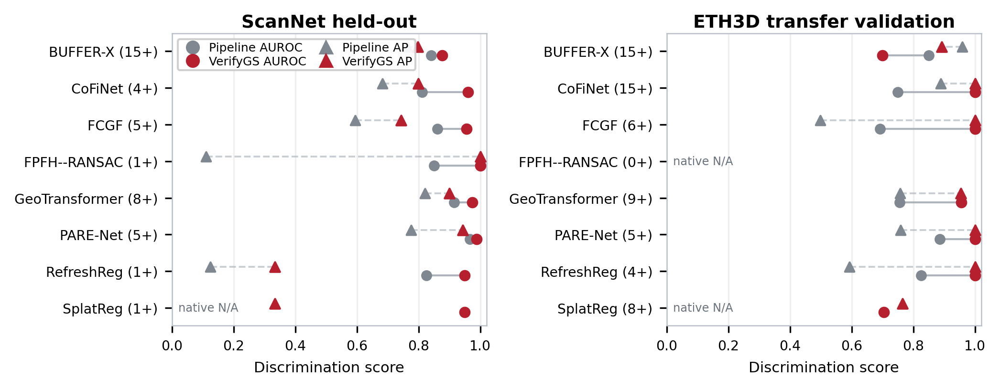
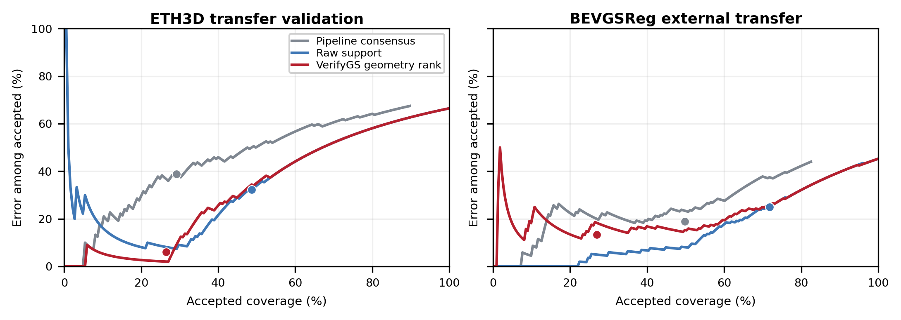
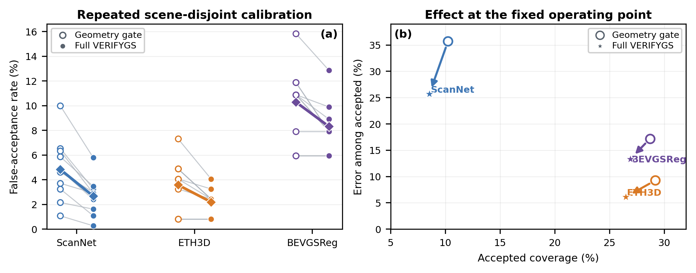
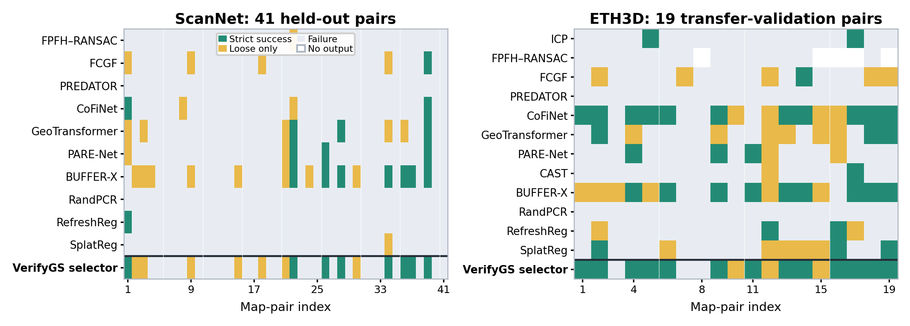
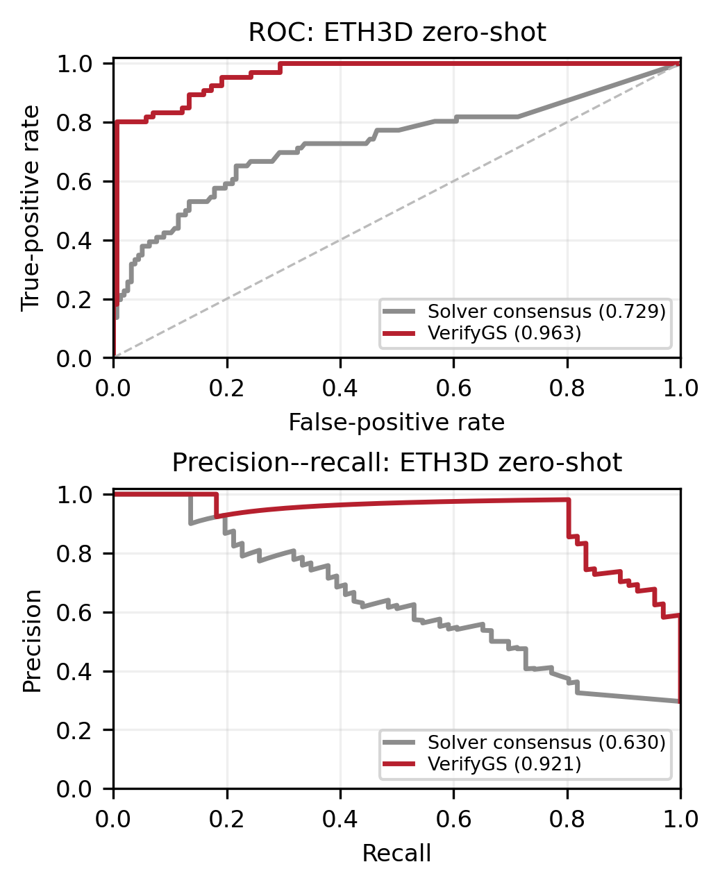
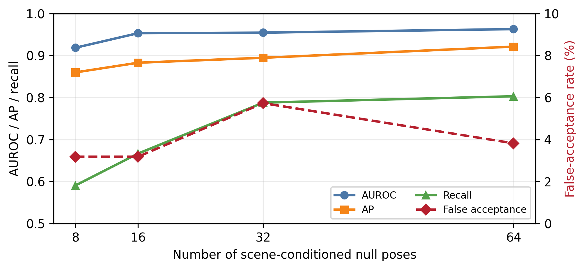
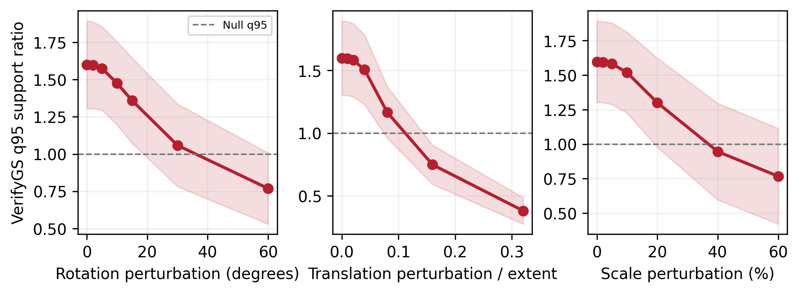
Qualitative registration decisions
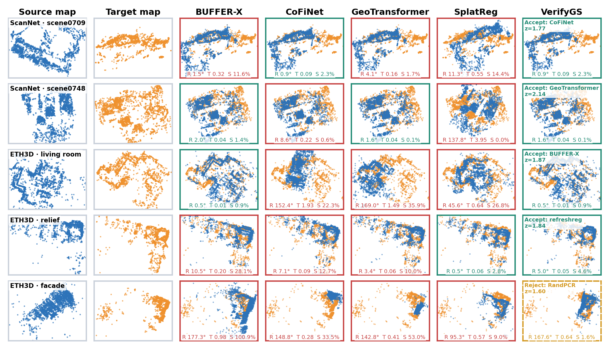
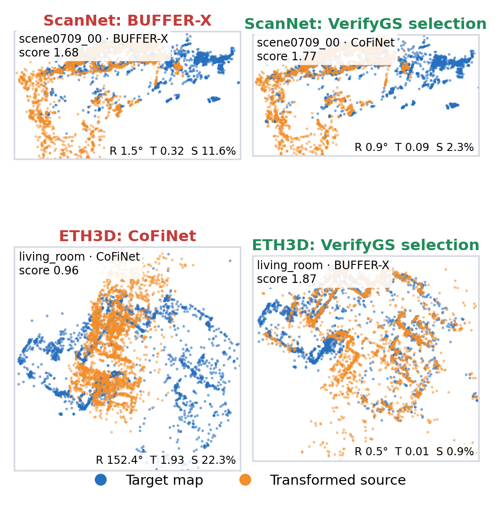
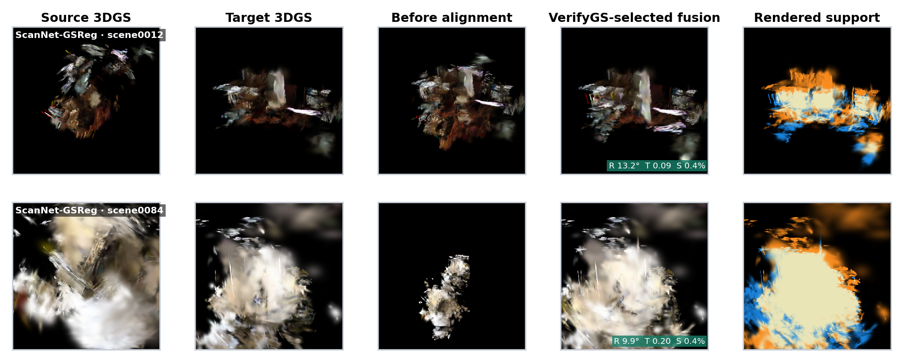
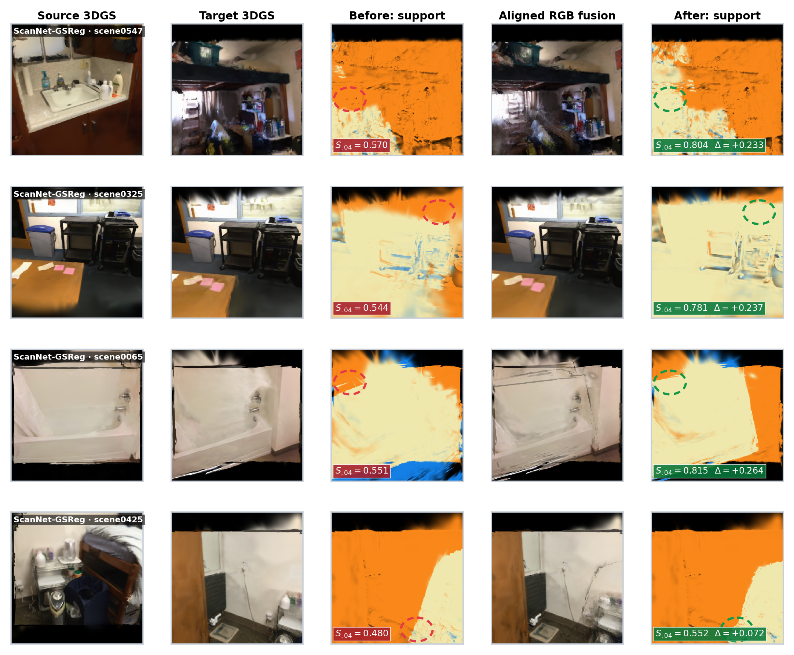
Reproduce locally
Clone the repository, install the evaluation dependencies, and run
python reproduce.py. The command reconstructs quantitative
tables and figures from per-candidate records, then verifies all expected
pool sizes. See the repository README for score
recomputation from prepared Gaussian-map pairs.